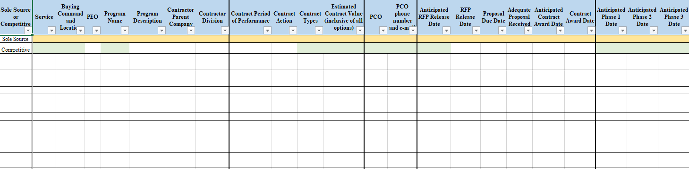
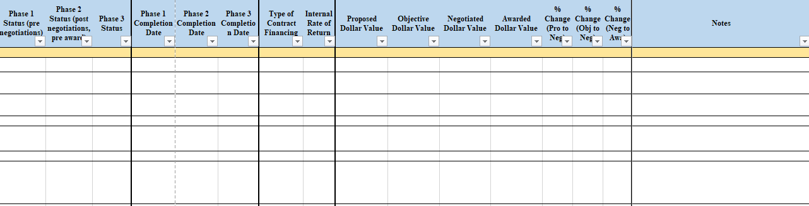

**ID__NMCARS_Annex-8__ID**
Reporting requirements. DON Contracting Activities shall submit quarterly, by March 10, June 10, September 10, and December 10, a rolling forecast of acquisitions requiring peer reviews by DASN(P) or DPC. Use the DON Peer Review Rolling Forecast spreadsheet format when submitting reports. Submit reports via email to RDAJ&As.fct@navy.mil with the subject: “DFARS 201.170 –Peer Review Rolling Forecast.” The electronic version of this template can be found at https://www.secnav.navy.mil/rda/DASN-P/Pages/NMCARS.aspx.
DON Peer Review Rolling Forecast Spreadsheet

-continued columns on spreadsheet
